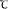

Основные задачи кодирования конечного автомата.
В общем случае кодирование автомата состоит в сопоставлении с каждым внутренним состоянием определенного набора значений переменных дополнительных входных сигналов ЛП автомата, с каждым состоянием входа - набора значений его основных входных сигналов и с каждым состоянием выхода — набора значений основных выходных сигналов ЛП. Однако во многих практических случаях состояния входа и выхода оказываются уже закодированными и задача кодирования автомата сводится к кодированию или, как иногда говорят, размещению его внутренних состояний. Поэтому основное внимание уделим именно кодированию внутренних состояний автомата. На этом этапе синтеза автомата определяются многие его свойства, и прежде всего устойчивость по отношению к состязаниям элементов памяти.
Как уже отмечалось, каждый реальный элемент памяти вносит определенную задержку , которая зависит от свойств данного элемента памяти. Естественно, что различные экземпляры элемента памяти даже одного и того же типа (например, два однотипных реле или два триггера) могут иметь различные задержки. Это значит, что если сигналы на входы двух элементов памяти подать одновременно, то сигналы на их выходах могут появиться не одновременно, так как время переключения ЭП может быть различным. С этим обстоятельством связано явление, которое называют состязанием элементов памяти.
С каждым внутренним состоянием автомата в результате процесса кодирования сопоставляется определенная кодовая комбинация ∆i , образованная значениями переменных, характеризующих состояния ЭП. Если такое сопоставление осуществляется произвольным образом, то может оказаться, что двум внутренним состояниям xi и xj, между которыми должен быть переход (соседние внутренние состояния), будут приписаны кодовые комбинации ∆i и ∆j отличающиеся значениями нескольких переменных (несоседние кодовые комбинации) (рис. 6.8,а). Тогда и возникают условия для состязаний элементов памяти, состояниями которых отличаются кодовые комбинации внутренних состояний xi и xj . Из-за наличия состязаний автомат из внутреннего состояния xi под воздействием состояния входа ρr может попасть не в xj , а в другое внутренне состояние xk и xl в зависимости от того, какой из элементов памяти, участвующих в состязании, раньше изменит свое состояние (рис. 6.8,б). Если затем при том же состоянии входа ρr автомат из xk и xl перейдет во внутреннее состояние xj(рис. 6.8,в), то такие состязания являются допустимыми, или некритическими, так как функция переходов автомата при этом искажаться не будет.
Если же автомат из xl или xk при состоянии входа ρr перейдет в какое-либо другое состояние ( xm ) или не изменит своего внутреннего состояния (рис. 6.8,г), то такие состязания являются критическими, или недопустимыми, так как при этом исказится функция переходов автомата и в дальнейшем он будет функционировать неправильно.
Примем, что автомат работает устойчиво, если в процессе его работы не возникают критические состязания элементов памяти. Если возможно возникновение критических состязаний, будем считать, что автомат работает неустойчиво. Очевидно, что неустойчивая работа автомата недопустима. Поэтому первоочередной задачей, которая должна решаться при кодировании внутренних состояний автомата, является обеспечение его устойчивой работы. Это можно сделать двумя способами, в соответствии с которыми существующие методы разделяют на две группы.
К первой группе относят методы кодирования, позволяющие устранить вообще все состязания элементов памяти. Для этого всем соседним внутренним состояниям, т. е. таким, между которыми должны быть переходы, необходимо приписать соседние кодовые комбинации. Методы второй группы осуществляют такое кодирование, при котором допускаются некритические состязания ЭП. Очевидно, и в том и в другом случае автомат будет работать устойчиво. Методы и той и другой группы имеют определенные преимущества и недостатки, причем устранение всех состязаний может быть осуществлено двумя способами— без преобразования или с преобразованием заданной таблицы переходов.